Image and Video Processing in Python

Beginners Start Here:
Create a Word Counter in Python
An introduction to Numpy and Matplotlib
Introduction to Pandas with Practical Examples (New)
Main Book
Image and Video Processing in Python
Audio and Digital Signal Processing (DSP)
Machine Learning Section
Machine Learning with an Amazon like Recommendation Engine
A bit about the RGB model
Computer graphics often use the RBG model, which stands for Red, Green and Blue. These are the three primary colors that can be used to create other colors. If you want an overview, Wikipedia has a good one.
The main thing you need to know is that you can create different colors by combining these primary colors. RGB colors usually have values of 0-255, where 0 means the color isn’t present at all, and 255 means it’s present with full strength. So the Rgb values for the color red are:
255, 0 , 0
So the first part is 255, which is Red. The other two are zero. This will create pure red.
You can create other colors by mixing these three. For example, pink is:
255, 51, 255
Red part is 255, green; is 51 and blue is 255 again.
I found these values by Googling rgb codes, and opening one the dozens of results that come up.
The only other thing you need to know is OpenCv inverts this. So instead of RGB, you have BGR, or Blue, green, red.
Display an image
So we are going to start really simple. How to display an image on the screen.
You might be surprised at how hard even this simple thing is. Try to search for how to display an image with Python, and you won’t find many results. I had to find a complicated example and extract the code from that.
Fire up a Python prompt and type:
import cv2
If you see no problems, you’re good. Open the file display.py
To our code:
import cv2
import sys
We import OpenCv and sys. sys will be used for reading from the command line.
# Read the image. The first command line argument is the image
image = cv2.imread(sys.argv[1])
The function to read from an image into OpenCv is imread(). We give it the arugment of sys.argv[1], which is just the first commandline argument. The image is read in a variable called image.
cv2.imshow("Image", image)
cv2.waitKey(0)
imshow() is the function that displays the image on the screen. The first value is the title of the window, the second is the image file we have previously read. cv2.waitKey(0) is required so that the image doesn’t close immediately. It will wait for a key press before closing the image.
python display.py ship.jpg
And you should see the image.
Blur and grayscale
Two important functions in image processing are blurring and grayscale. Many image processing operations take place on grayscale (or black and white) images, as they are simpler to process (having just two colors).
Similarly, blurring is also useful in edge detection, as we will see in later examples. Open the file blur.py.
import cv2
import sys
# The first argument is the image
image = cv2.imread(sys.argv[1])
This is the same as before.
#convert to grayscale
gray_image = cv2.cvtColor(image, cv2.COLOR_BGR2GRAY)
First, we convert the image to gray. The function that does that is cvtColor(). The first argument is the image to be converted, the second is the color mode. COLOR_BGR2GRAY stands; for Blue Green Red to Gray.
You must have heard of the RGB color scheme. OpenCv does it the other way round- so blue is first, then green, then red.
#blur it
blurred_image = cv2.GaussianBlur(image, (7,7), 0)
If you have ever used Photoshop (or its ugly cousin Gimp), you may have heard of the Gaussian blur. It is the most popular function to blur images, as it offers good blurring at fairly fast speed. That’s what we’ll use.
The first argument is the image itself.
The second argument is the window size. Gaussian Blur works over a small window, and blurs all the pixels in that window (by averaging their values). The larger the window, the more blurring will be done, but the code will also be slower. I’m choosing a window of (7,7) pixels, which is a box 7 pixels long and 7 pixels wide. The last value is not important, so I’m setting it to the default_(0)_.
# Show all 3 images
cv2.imshow("Original Image", image)
cv2.imshow("Gray Image", gray_image)
cv2.imshow("Blurred Image", blurred_image)
cv2.waitKey(0)
And now we show all images.
python blur.py ship.jpg
Edge detection
Edge detection is a very useful function in image processing. Edge detection means detecting where the edges of an object in an image are. The algorithm looks for things like change in color, brightness etc to find the edges.
The most pioneering work in this domain was done by John Canny, and his algorithm is still the most popular. You don’t need to understand how the algorithms work under the hood to use them, but if you are interested in learning more, Wikipedia has good summaries:
<https://en.wikipedia.org/wiki/Edge_detection>
<https://en.wikipedia.org/wiki/Canny_edge_detector>
We will jump straight into the code. Open edge_detect.py.
import cv2
import sys
# The first argument is the image
image = cv2.imread(sys.argv[1])
#convert to grayscale
gray_image = cv2.cvtColor(image, cv2.COLOR_BGR2GRAY)
#blur it
blurred_image = cv2.GaussianBlur(gray_image, (7,7), 0)
cv2.imshow("Orignal Image", image)
All this should be familiar, as it is similar to the last section.
canny = cv2.Canny(blurred_image, 10, 30)
cv2.imshow("Canny with low thresholds", canny)
The function for Canny edge detection is, unsurprisingly, called Canny(). It takes three; arguments. The first is the image. The second and third are the lower and upper thresholds respectively.
The Canny edge detector detects edges by looking in the difference of pixel intensities. Now, I could spend hours explaining what that means, or I could just show you. So bear with me for a moment. For the first example above, I’m using low thresholds of 10, 30, which means a lot of thresholds will be detected.
canny2 = cv2.Canny(blurred_image, 50, 150)
cv2.imshow("Canny with high thresholds", canny2)
In this second example, we will use higher thresholds. Let’s see what that means.
python edge_detect.py ship.jpg
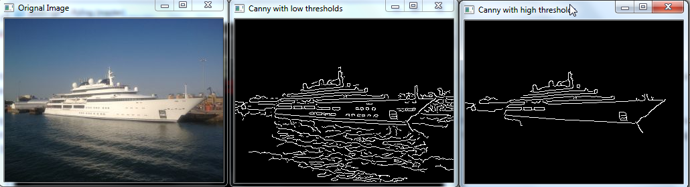
The leftmost is the original image. The middle is the one with low thresholds. You can see it detected a lot of edges. Look inside the ship. The algorithm detected the windows of the ship, as well as a small hatch near the front. But it also detected a lot of unnecessary details in the sea. The rightmost image has the high thresholds. It didn’t detect the unneeded info in the sea, but it also failed to detect the windows in the ship.
So how will you choose the thresholds? One thing I will say repeatedly in this chapter- there are no fixed answers. Try different values till you find ones you like. This is because the values will depend on your application and the type of images you are working with.
Before I close this section, a bit of info about the image. I took the photo in Southampton when on a river cruise. The ship is at the exact place where the Titanic sailed from. That parking spot costs £1000 a day (around $1500). Still cheap for a £30 million ship.
Count objects
Okay, now that we can detect the edges of an object, we can do useful stuff with it. Like detect objects. Let’s start.
import cv2
import sys
# Read the image
image = cv2.imread(sys.argv[1])
#convert to grayscale
gray_image = cv2.cvtColor(image, cv2.COLOR_BGR2GRAY)
#blur it
blurred_image = cv2.GaussianBlur(gray_image, (7,7), 0)
# Show both our images
cv2.imshow("Original image", image)
cv2.imshow("Blurred image", blurred_image)
# Run the Canny edge detector
canny = cv2.Canny(blurred_image, 30, 100)
cv2.imshow("Canny", canny)
This code is the same as before. We have detected the edges in the image and the blurred image.
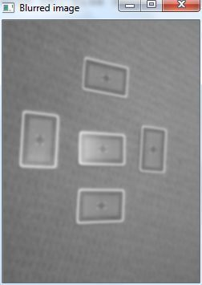
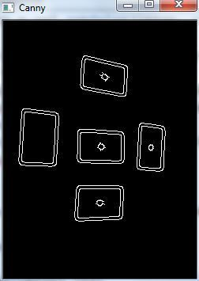
Now, we are going to find the contours (which is just a fancy word for edges) in the image. If you are wondering why we need to do that, since we can clearly see the edges in the image above, it’s because the code isn’t aware of it. The code below finds the edges programatically:
contours, hierarchy= cv2.findContours(canny, cv2.RETR_EXTERNAL, cv2.CHAIN_APPROX_SIMPLE)
The findContours() finds the contours in the given image. The first option is the output of the canny edge detector. RETR_EXTERNAL tells OpenCv to only find the outermost edges (as you can find contours within contours). The second arguments tells OpenCv to use the simple approximation.
The function returns two values: A list of contours found, and the hierarchy (which we’ll ignore. It is used if you have many contours embedded within others).
The contours return value is a simple list that contains the number of contours found. Taking the length of it will give us number of objects found.
print("Number of objects found = ", len(contours))
cv2.drawContours(image, contours, -1, (0,255,0), 2)
cv2.imshow("objects Found", image)
cv2.waitKey(0)
Finally, we use the drawContours() function. The first argument is the image we want to draw on. The second is the contours we found in the last function. The 3rd is -1, to say that we want all contours to be drawn (we can choose to only draw certain contours). The fourth is the color, green in this case, and the last is the thickness.
Finally, we show the image.
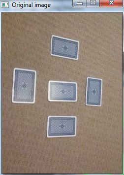
If you want to use your own images, make sure they are not too high quality. In the first attempt, I was using Hd quality images, and opencv was detecting carpet swirls as objects. It also detected shadows as objects (including my own). Though blurring is supposed to get rid of this, if the photo is of very high quality, you will need to do a lot of blurring.
Also, make sure you have a plain background. If you have fancy tiles or something in the background, that will be detected too.
Face Detection
Face detection with OpenCV
OpenCV uses machine learning algorithms to search for faces within a picture. For something as complicated as a face, there isn’t one simple test that will tell you if it found a face or not. Instead, there are thousands of small patterns/features that must be matched. The algorithms break the task of identifying the face into thousands of smaller, bite-sized tasks, each of which is easy to solve. These tasks are also called classifiers.
For something like a face, you might have 6,000 or more classifiers, all of which must match for a face to be detected (within error limits, of course). But therein lies the problem: For face detection, the algorithm starts at the top left of a picture and moves down across small blocks of data, looking at each block, constantly asking, “Is this a face? … Is this a face? … Is this a face?” Since there are 6,000 or more tests per block, you might have millions of calculations to do, which will grind your computer to a halt.
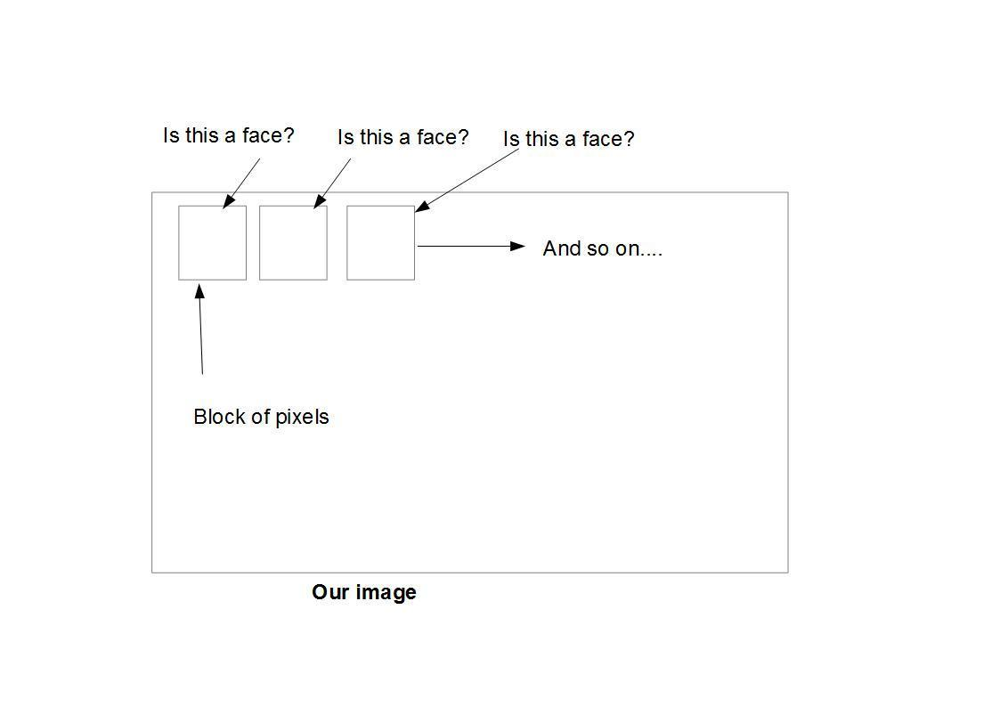
The image above is a rough example of how face detection works. The algorithm breaks the image into small blocks of pixels, and does the face detection on each.
To get around this, OpenCV uses cascades. What’s a cascade? The best answer can be found from the dictionary: A waterfall or series of waterfalls
Like a series of waterfalls, the OpenCV cascade breaks the problem of detecting faces into multiple stages. For each block, it does a very rough and quick test. If that passes, it does a slightly more detailed test, and so on.
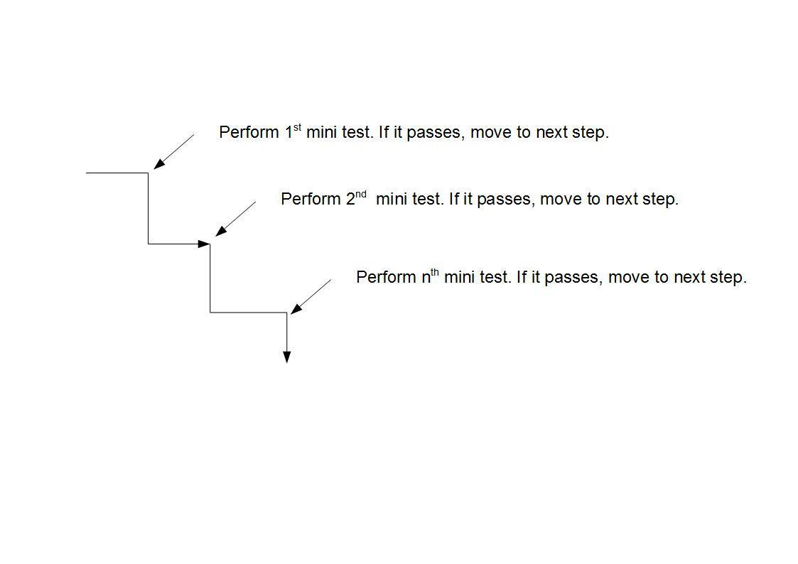
The algorithm may have 30-50 of these stages or cascades, and it will only detect a face if all stages pass. The advantage is that the majority of the pictures will return negative during the first few stages, which means the algorithm won’t waste time testing all 6,000 features on it. Instead of taking hours, face detection can now be done in real time.
Cascades in practice
Though the theory may sound complicated, in practice it is quite easy. The cascades themselves are just a bunch of XML files that contain OpenCV data used to detect objects. You initialize your code with the cascade you want, and then it does the work for you.
Since face detection is such a common case, OpenCV comes with a number of built-in cascades for detecting everything from faces to eyes to hands and legs. There are even cascades for non-human things. For example, if you run a banana shop and want to track people stealing bananas, this guy has built one for that!
Understanding the code
Let’s break down the actual code, face_detect.py.
# Get user supplied values
imagePath = sys.argv[1]
cascPath = "haarcascade_frontalface_default.xml"
You first pass in the image and cascade names as command-line arguments. We’ll use the Abba image as well as the default cascade for detecting faces provided by OpenCV.
# Create the haar cascade
face_cascade <span class="pl-k">=</span> cv2.CascadeClassifier(cascasdepath)
Now we create the cascade and initialize it with our face cascade. This loads the face cascade into memory so it’s ready for use. Remember, the cascade is just an XML file that contains the data to detect faces.
# Read the image
image = cv2.imread(imagePath)
gray = cv2.cvtColor(image, cv2.COLOR_BGR2GRAY)
Here we read the image and convert it to grayscale. Many operations in OpenCv are done in grayscale.
# Detect faces in the image
faces = face_cascade.detectMultiScale(
gray,
scaleFactor = 1.2,
minNeighbors = 5,
minSize = (30,30)
)
This function detects the actual face – and is the key part of our code, so let’s go over the options.
The detectMultiScale function is a general function that detects objects. Since we are calling it on the face cascade, that’s what it detects. The first option is the grayscale image.
The second is the scaleFactor. Since some faces may be closer to the camera, they would appear bigger than those faces in the back. The scale factor compensates for this.
The detection algorithm uses a moving window to detect objects. minNeighbors defines how many objects are detected near the current one before it declares the face found. minSize, meanwhile, gives the size of each window.
I took commonly used values for these fields. In real life, you would experiment with different values for the window size, scale factor, etc., until you find one that best works for you.
The function returns a list of rectangles where it believes it found a face. Next, we will loop over where it thinks it found something.
print("Found {0} faces!".format(len(faces)))
# Draw a rectangle around the faces
for (x, y, w, h) in faces:
cv2.rectangle(image, (x, y), (x+w, y+h), (0, 255, 0), 2)
This function returns 4 values: the x and y location of the rectangle, and the rectangle’s width and height (w , h).
We use these values to draw a rectangle using the built-in rectangle() function.
cv2.imshow("Faces found" ,image)
cv2.waitKey(0)
In the end, we display the image, and wait for the user to press a key.
Checking the results
Let’s test against the Abba photo:
$ python face_detect.py abba.png
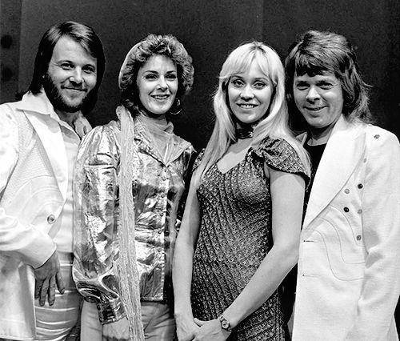
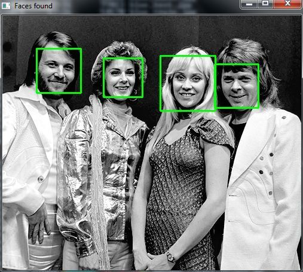
That worked. How about another photo:
That… is not a face. Let’s try again. I changed the parameters and found that setting the scaleFactor to 1.2 got rid of the wrong face.
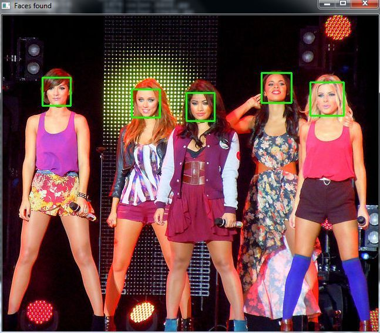
What happened? Well, the first photo was taken fairly close up with a high quality camera. The second one seems to have been taken from afar and possibly from a mobile phone. This is why the scaleFactor had to be modified. As I said, you’ll have to tweak the algorithm on a case by case basis to avoid false positives.
Be warned though that since this is based on machine learning, the results will never be 100% accurate. You will get good enough results in most cases, but occasionally the algorithm will identify incorrect objects as faces.
Extending to a webcam
So what if you want to use a webcam? OpenCV grabs each frame from the webcam and you can then detect faces by processing each frame. You do the same processing as you do with a single image, except this time you do it frame by frame. This will require a lot of processing, though. I saw close to 90% CPU usage on my laptop.
import cv2
import sys
cascPath = "haarcascade_frontalface_default.xml"
face_cascade <span class="pl-k">=</span> cv2.CascadeClassifier(cascasdepath)
This should be familiar to you. We are creating a face cascade, as we did in the image example.
if len(sys.argv) < 2:
video_capture = cv2.VideoCapture(0)
else:
video_capture = cv2.VideoCapture(sys.argv[1])
This line sets the video source to the default webcam (VideoCapture(0) always points to the default webcam) if no video file is specified. Else, it loads the file.
while True:
# Capture frame-by-frame
ret, image = video_capture.read()
Here, we capture the video. The read() function reads one frame from the video source, which in this example is the webcam. This returns:
- The actual video frame read (one frame on each loop)
- A return code
The return code tells us if we have run out of frames, which will happen if we are reading from a file. This doesn’t matter when reading from the webcam, since we can read forever.
ret, image = video_capture.read()
if not ret:
break
gray = cv2.cvtColor(image, cv2.COLOR_BGR2GRAY)
faces = face_cascade.detectMultiScale(
gray,
scaleFactor = 1.2,
minNeighbors = 5,
minSize = (30,30)
)
#print("The number of faces found = ", len(faces))
for (x,y,w,h) in faces:
cv2.rectangle(image, (x,y), (x+h, y+h), (0, 255, 0), 2)
cv2.imshow("Faces found", image)
Again, this code should be familiar as it’s the same as before. We are merely searching for the face in our captured frame.
if cv2.waitKey(1) & 0xFF == ord('q'):
break
We wait for the ‘q’ key to be pressed. If it is, we exit the script.
# When everything is done, release the capture
video_capture.release()
cv2.destroyAllWindows()
Here, we are just cleaning up.
If you want to use the webcam:
python webcam_face_detect.py
If you want to check for video:
python webcam_face_detect.py webcam.mp4
This will play the file I provided. It may not work unless you have a video decoder like Ffmpeg installed.
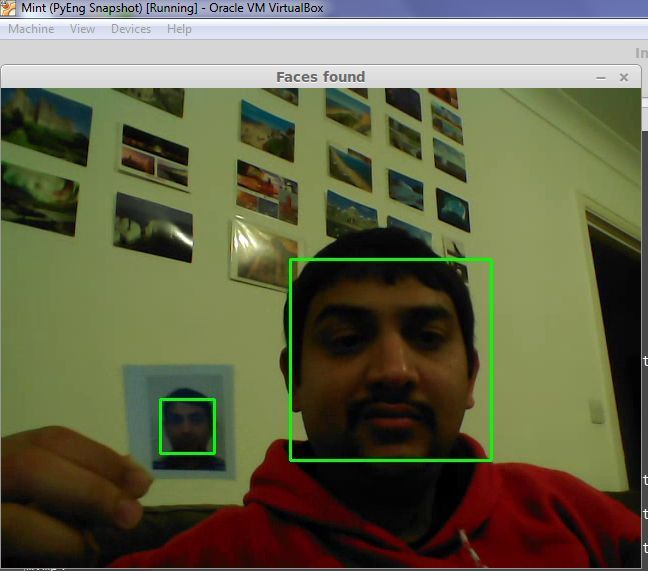
So, that’s me with a passport sized photo in my hand. And you can see that the algorithm tracks both the real me and the photo me.
Like I said in the last section, machine learning based algorithms are rarely 100% accurate. We aren’t at the stage where Robocop driving his motorcycle at 100 mph can track criminals using low quality CCTV cameras… yet.
Motion detection
We’ll use our webcam example, and extend it so it can detect motion.
How do you detect motion? You take two consecutive frames, and find the difference between them. If the difference is minor, that means no motion occurred. If you find a large difference between frames, then motion must have occurred.
#!/usr/bin/python
import cv2
import sys
import numpy as np
if len(sys.argv) < 2:
video_capture = cv2.VideoCapture(0)
else:
video_capture = cv2.VideoCapture(sys.argv[1])
This code is the same as before. We are creating a video capture instance.
# Read two frames, last and current, and convert current to gray.
ret, last_frame = video_capture.read()
ret, current_frame = video_capture.read()
gray = cv2.cvtColor(current_frame, cv2.COLOR_BGR2GRAY)
Here we read two frames and convert the current to gray. You may notice we are doing this outside the while loop. This is because we want two consecutive frames captured before the main loop starts. We call them last_frame and current_frame. Why do we need two? So that we can see the difference between them.
i = 0
while(True):
# We want two frames- last and current, so that we can calculate the different between them.
# Store the current frame as last_frame, and then read a new one
last_frame = current_frame
We enter our while loop now, and the first thing we do is store the current_frame as the last frame. That’s because we are going to read a new frame, and each loop iteration, the current_frame from last iteration will become the last_frame of this iteration.
ret, current_frame = video_capture.read()
gray = cv2.cvtColor(current_frame, cv2.COLOR_BGR2GRAY)
We read a new frame and convert it to grayscale.
# Find the absolute difference between frames
diff = cv2.absdiff(last_frame, current_frame)
We use the inbuilt absdiff() to find the absolute difference between consecutive frames.
Now, I have some code that will show us what the difference is. Before that, you must understand that OpenCv video and image frames are just numpy arrays that contain the values of all the pixels in the image or video. If you want, you can do something like to print the whole array.
print(current_frame)
[[[10 35 5]
[ 9 34 4]
[13 32 8]
...,
[87 66 68]
[87 70 62]
[86 69 61]]
[[12 34 9]
[12 34 9]
[19 31 8]
...,
[87 66 68]
[86 69 61]
[86 69 61]]
[[14 32 10]
[14 32 10]
[21 30 9]
...,
[85 68 65]
[86 69 61]
[86 69 61]]
The above is just a snippet-you can see the array is huge.
What I will do is just print the average of the array.
I have some code that I’ve commented out. It prints the values of the average of the current_frame and the difference. I only print once every ten times, to avoid too much data on the screen.
# Uncomment the below to see the difference values
'''
i += 1
if i % 10 == 0:
i = 0
print np.mean(current_frame)
print np.mean(diff)
'''
Here is some sample output:
Current frame = 83.9231391059
Diff = 5.06139973958
Current frame = 84.3319932726
Diff = 4.31867404514
Current frame = 88.6718229167
Diff = 0.461206597222
Current frame = 88.5050021701
Diff = 0.156022135417
Current frame = 89.7750976562
Diff = 2.8298578559
The above is without motion. With motion:
Current frame = 82.5932790799
Diff = 7.46467230903
As you can see, the average of the difference frame is very little when you aren’t moving. Try it yourself (if you have a webcam). Sit silently for a few seconds, and you will see the difference is 1.0 or less. Start moving around, and it will jump to 10 or even more.
That’s how I got the values I’m going to use- by experimentation:
# If difference is greater than a threshold, that means motion detected.
if np.mean(diff) > 10:
print("Achtung! Motion detected.")
If the average difference is greater than 10 (a value I got by experiment), I take it to mean motion has been detected, and print the warning.
# Display the resulting frame
cv2.imshow('Video',diff)
if cv2.waitKey(1) & 0xFF == ord('q'):
break
# When everything done, release the capture
video_capture.release()
cv2.destroyAllWindows()
Finally, we display our difference image and exit.
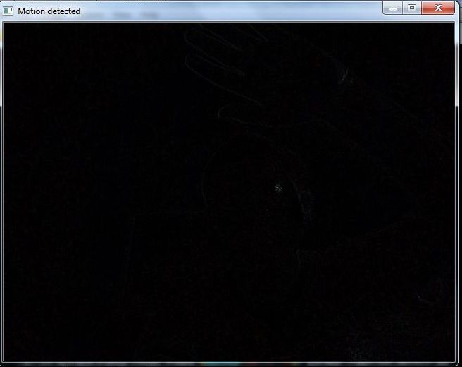
No movement, hence the image is black
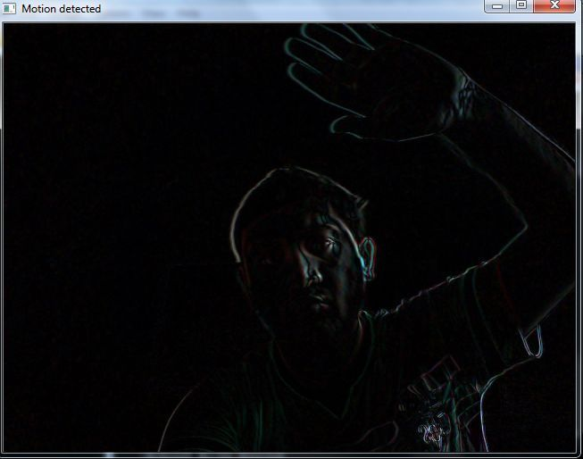